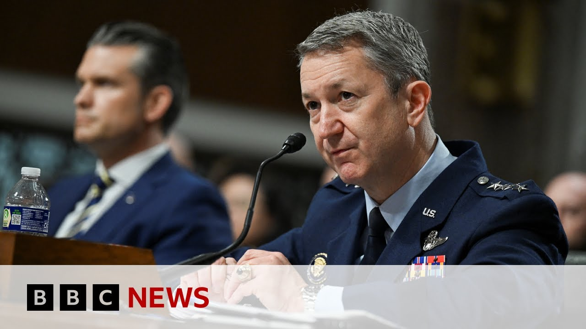

【伊朗核设施在125架战机行动后“严重受损”——美国高级将领 | BBC新闻】
Summary: The U.S. Secretary of Defense and the Chairman of the Joint Chiefs of Staff held a press conference regarding "Operation Midnight Hammer", describing it as precise, powerful, and clean, delivering a heavy blow to Iran’s nuclear program — although independent verification is still pending. The operation had been planned for months and marked the first use of the Massive Ordnance Penetrator (MOP), a bunker-busting bomb. It was conducted in close coordination with Israel. According to the U.S. military, the strike was executed with high skill and severely damaged Iran’s weapons and infrastructure. In total, 125 aircraft were deployed, along with 75 precision-guided missiles and 14 bunker-busting bombs, without any retaliation from Iran during the mission.
摘要： 美国防长与参谋长联席会议主席就“午夜铁锤行动”举行新闻发布会，称此次行动精准、强力且干净，重创伊朗核计划，但尚无独立验证。行动经数月策划，首次动用巨型钻地弹“掩体粉碎者”，并与以色列盟友密切协调。美军方称行动以高超技巧执行，严重破坏伊朗武器与基础设施，共出动125架战机、75枚精确制导弹及14枚钻地弹，全程未遭伊朗反击。

⏱️ Estimated Reading Time: 24 min
📚 六级生词 📚 雅思生词 📚 托福生词 📚 专八生词 📚 SAT生词 📚 考研生词 📚 GRE生词 📚 高考生词
So, we've just been watching their press conference by the US Defense Secretary Pete Hegsth and the Chairman of the Joint Chiefs of Staff, General Dan Kaine, where they've been talking about what the US is calling Operation Midnight Hammer.
我们刚观看了美国防长皮特·赫格斯特与参谋长联席会议主席丹·凯恩将军的新闻发布会，他们谈及美方所称的“午夜铁锤行动”。
That was that operation which dropped bombs on three nuclear sites in Iran.
该行动对伊朗三处核设施实施了轰炸。
We heard Secretary Hegsth describe the operation as focused, powerful, and clean.
赫格斯特部长称此次行动精准、强力且干净。
He said it had devastated the Iranian nuclear program.
他表示行动重创了伊朗核计划。
We don't obviously have any independent verification of that at this point, but that is how the US Secretary of Defense Pete Hegth is describing it.
目前尚无独立验证，但美国防长皮特·赫格斯特如此描述。
He said it had taken months and weeks of planning, positioning, and prepositioning.
他称行动经过数月的策划、部署与预先调配。
and he said that it was the first deployment of these massive ordinance penetrators, these so-called bunker busters that we've been talking about all week.
他还表示这是首次动用巨型钻地弹（即连日讨论的“掩体粉碎者”）。
And he said it had been done uh closely arranged with the allies in Israel.
他称行动与以色列盟友密切协调。
We then heard from the chairman of the joint chiefs of staff, General Kaine, who said that this had been carried out with exceptional skill and discipline and had severely degraded Iranian weapons and infrastructure.
参谋长联席会议主席凯恩将军称行动以高超技巧与纪律执行，严重削弱伊朗武器与基础设施。
He said the whole operation uh had begun at 5:00 p.m. Eastern time yesterday, about 10 p.m. here in the UK, and it began with the US submarine launching about two dozen Tamahawk missiles.
他表示行动始于昨日美东时间下午5点（英国晚10点），美军潜艇首先发射约24枚战斧导弹。
He then described aircraft that had flown ahead of these big B2 aircraft to run a deception mission essentially uh to confuse the Iranian defense systems.
他提到有战机先于B2轰炸机执行诱骗任务以扰乱伊朗防御系统。
But he also said that not a single shot had been fired and that he thought that the US strike package as he called it had got in and out of Iran without being detected.
但他强调全程未遭反击，美军打击编队进出伊朗未被发现。
um and that they had used 125 aircraft, 75 precision guided missiles and 14 of these massive ordinance penetrators that we have been talking about.
共动用125架战机、75枚精确制导弹及14枚前述巨型钻地弹。
Um and uh we'll discuss the actual logistics of that operation with our security expert Mikey Kay in just a moment.
稍后将与安全专家米基·凯讨论行动具体细节。
But for now, let's go back over to Washington DC to our chief North America correspondent Gary O Dunnoo.
现在请回华盛顿首席北美记者加里·奥多诺休。
Gary, a lot of praise there from the secretary and the joint chiefs of staff, for the members of the military who carried it out and for the president himself.
加里，防长与参联会主席高度赞扬执行任务的军人及总统本人。
They're clearly very happy with how this operation went.
他们对行动结果显然非常满意。
They are and um they've sort of flooded the zone there with a quite a lot of facts which of course we'll will um everyone will pour over and make of what they will.
确实，他们抛出大量细节供各方研判。
The one thing I will draw out of that was that they did say twice that the battle damage assessment is ongoing.
值得注意的是，他们两次强调战损评估仍在进行。
Um, and that is something that is, you know, is what you would expect.
这符合常规预期。
Um, and is a little bit at odds with the the president saying that there is total and complete obliteration of these facilities.
但与总统所称“设施被彻底摧毁”略有矛盾。
Um, how do you know at this point when you're still assessing it?
评估未完成时如何断言？
um they repeated that kind of rhetoric.
他们重复了这类表述。
But at the moment, you you'll notice that while we had a nice map of the the bombers leaving the US and their direction, all that, there was no no uh imagery, no uh evidence, if you like, of these assertions.
但当前仅有轰炸机离美路线图，无图像或证据支撑其主张。
So, I think that the jury is very much still out on their claims about the the nature of what's been achieved here.
故其关于战果的声明仍存疑。
uh that may come in the coming days, it may not.
相关信息或于未来几日公布，也可能不会。
But at the moment, it's just assertion.
目前仅为单方主张。
Uh and I think the while that was happening, we're also seeing some comments from the vice president JD Vance who's been talking to other networks uh warning uh Iran, suggesting that this was now an opportunity, suggesting that they their program had been put back by years, but also just suggesting that it had been completely destroyed.
副总统JD·万斯同期警告伊朗称其核计划倒退数年甚至被彻底摧毁。
uh and and so the messaging has begun on this uh and that will carry on through the day with the the Donald Trump's senior left tenants about out on all the talk shows in the coming hours.
信息战已启动，特朗普高级幕僚将全天参加访谈节目强化叙事。
Gary, for a president who has run three campaigns at this stage on being the president to take America out of wars, being the peacemaker, the dealmaker, and so on, the detail that we heard there from the chairman of the Joint Chiefs of Staff in particular, this sounds like it was quite a sizable operation involving submarines, various different type of aircraft, many personnel involved as well.
加里，这位以“结束战争”为竞选纲领的总统，此次行动却动用潜艇、多型战机及大量人员。
Quite the opposite of what the president said he was going to do.
与其承诺完全相悖。
Yeah, there's a lot of there's a lot of hardware here, including some decoys by the sound of it that flew west instead of east.
行动投入大量装备，包括向西飞行的诱饵机群。
Uh 125 aircraft, I think you mentioned 75 precision guided bombs, all this kind of thing.
125架战机、75枚精确制导弹等。
It's I think if you're going to get involved, then the way you would would want to message this is look how powerful we are.
若决定介入，美方试图传递“展示实力”的信号。
Look what we can deliver.
彰显能力。
Uh overwhelming force.
压倒性力量。
Um not a shot fired in response to us.
未遭反击。
Uh that is a message that you know may resonate with the American people uh who may be uh wondering where those promises went about uh ending forever wars and stay staying out of foreign conflict.
或引发民众对“结束永久战争”承诺的质疑。
So if you're if you're going to do it uh you probably want to do it and make a show of it like they've done tonight uh and and really in a sense flaunt your power.
故此次高调行动意在炫耀武力。
And that was very much what we just saw there.
这正是我们刚才所见。
And they were also asked, Gary, weren't they, about when they had notified the congressional leadership, which is the kind of part for the course procedure here, that you would alert those people in Congress who ordinarily have to pass permission perhaps for something like this.
他们还被问及何时通知国会领导层——此类行动常规需提前告知。
Yeah, I'll be honest with you.
实话实说，
I missed that bit while I was doing something else.
我当时分心未留意此部分。
So, I don't know what was said about that, but you're right.
故不清楚具体回应，但您说得对。
There is normally a pro my handwritten notes here, Gary.
通常应——加里，我的手写笔记显示
from my handwritten notes here as I was scribbling frantically.
我匆忙记录中提到
There was a lot going on.
当时信息密集。
H Secretary Hath I think said um we we notified the congressional leadership in the immediate aftermath of the operation once uh once all of the American pilots were out of Iranian airspace.
赫格斯特部长称在美军飞行员全部撤离伊朗领空后立即通知国会领导层。
That sounds quite late to me in terms of what's typically done.
按惯例这算较晚通知。
They have this gang of eight group of congressional leaders in House and Senate who they typically keep in the loop on this sort of thing.
通常国会“八人帮”会提前知情。
And certainly some Democrats have been complaining about not being kept in the loop on on this kind of thing.
部分民主党人抱怨未获告知。
But um bear in mind there have been some efforts in Congress to try and uh force the administration to get authorization.
但国会曾试图要求政府获得授权。
But uh Donald Trump's not interested in that.
特朗普不予理会。
Um he like many American presidents in recent years has taken more executive power to himself.
如近年多位总统般扩大行政权。
He will say there's no declaration of war here.
他将辩称此非宣战。
So there's no constitutional uh right for Congress to to intervene on that.
故国会无权干预。
Uh this is a you know they're hoping a oneanddone situation although he clearly left the door open last night for more attacks.
他们希望一击了结，但特朗普暗示可能进一步打击。
uh which he said uh he said there were still plenty of targets left and it would be a lot easier.
他称仍有大量目标，下次行动会更轻松。
He said next time if Iran didn't choose peace over tragedy.
若伊朗不“选择和平而非悲剧”。
All right Gary Odanhoo there in Washington.
华盛顿的加里·奥多诺休报道。
Thank you very much for that.
非常感谢。
Well let's try and translate some of that military speak now into language that mere civilians can understand.
现在尝试将军事术语转化为通俗语言。
I'm joined by the security briefs Mikey Kay former senior officer and assault helicopter pilot with the British military.
安全简报专家米基·凯加入讨论，他是英军前高级军官及攻击直升机飞行员。
Mikey, there was a lot of terminology there, a lot of descriptions of various branches of the military.
米基，刚才涉及大量军种术语。
We didn't actually see any video of what might have happened, which is slightly unusual, I suppose, in this day and age.
未见现场视频，当今时代略显反常。
But what what's your take on the operation as it was described there?
您如何看待所述行动？
Um well I think all the posturing that we saw last week um the mass exodus of what's called KC1 135 they're air big air refueling tankers um there was about 21 of those that pressed uh east from the US uh along with fighter packages from F-35 which is a fifth generation stealth fighter uh to F-22 which is probably one of the most advanced air defense fighters in the world only the US has got that um to F-15 so all of these Strike aircraft have the ability to do what the joint chiefs of staff said was uh in military parliament it's called SAD and that that stands for suppression of any enemy air defenses.
上周KC-135加油机群东调、F-35/F-22/F-15等战机编队，均执行参联会所称的“压制敌防空系统”（SAD）任务。
So we're all focusing on the B2s at the moment.
当前焦点在B2轰炸机。
So we saw that mass exodus the tankers the fighter jets the B2s and this is obviously what they were posturing for.
加油机、战机与B2的调动显属威慑姿态。
Um, Kane mentioned as well, didn't he, the Tamahawks fired from the submarine in advance and those aircraft flying ahead of the B2 to kind of as a distraction, I suppose.
凯恩提到潜艇发射战斧导弹及B2前置诱饵机群。
Yeah. The uh Pete Hexf used the word uh misinformation.
赫格斯特用“误导”一词。
Um the military word is deception decoy.
军事术语为“欺骗性诱饵”。
Uh and we saw the joint chiefs of staff using that terminology as well.
参联会亦使用该术语。
Um, and yeah, so it's a it's a multi-layered package, a composite air package, Kameo is what we call it in the military.
这是多层复合空中编队（军方称“卡梅奥”）。
Um, you'll have the core of that being the B2s with the GBU57 uh massive ordinance penetrators.
核心是携带GBU-57钻地弹的B2。
Um, and yeah, you can just see it's a phenomenally long journey.
航程极长。
Um, the B2s will have been picked up at various stages of that.
B2途中需多次加油。
So, as they're coming out of the states, they're going to be using KC135 tankers to refuel.
离美阶段由KC-135加油。
as are then coming over into into Europe and into the into the region.
进入欧洲及目标区域时亦然。
That's when you'll get these additional suppression of enemy air defense fighter packages joining them going ahead.
此时防空压制战机编队加入。
Um and what they'll be using is one of the key assets that those fighter packages will have is is called an anti-radiation missile.
关键装备是反辐射导弹。
Um so what the fighter packages will be looking for is the surfaceto-air missile operators in in Iran territory.
战机群搜寻伊朗地面防空系统。
As soon as they switch on that surfacetoair missile radar, there's generally two.
其雷达开机后（通常有搜索与跟踪两种雷达）
There's a search radar and a target tracking radar.
搜索雷达与目标追踪雷达。
But as soon as they're turned on, these aircraft have the ability to look at that radio frequency, understand what it is through algorithms in the software and then be able to if it if it remains on, be able to pinpoint that surfacetoair missile system with the anti-radiation missile, get that off the rail and then take out any threat to the B2s coming in.
战机可锁定雷达频率，通过算法识别后发射反辐射导弹摧毁威胁B2的防空系统。
So that's the general idea of it.
此为基本战术。
And then you got the Tams which are um it looks like from the map we can see on the screen there based off the Omani coast they've got of a range of over 2,000 kilometers.
战斧导弹从阿曼海岸发射，射程超2000公里。
They fly very low.
超低空飞行。
They fly at about 3/4 of the speed of sound.
约0.75马赫。
Um they've got an accuracy up to about 10 mters GPS guided with a,000 pound uh warhead.
GPS制导精度达10米，配备2000磅弹头。
Um so if you then flood you know more of Iranian airspace with that that's going to be also form part of a decoy package as well.
饱和攻击伊朗领空亦属诱骗战术。
They're used not like the GBU57 the big ones.
与GBU-57不同，
They're used to what's called soften up targets if you like uh and just basically provide um you know a scatter effect.
战斧用于“软化目标”制造分散效应。
Um Iran's air defenses have been degraded uh and some instances destroyed quite significantly.
伊朗防空系统已遭显著削弱甚至摧毁。
So you know they're going to they're going to have problems with dealing this sort of scatter effect.
难以应对此类分散打击。
And that was the whole intent of the package.
此即整个编队作战意图。
And the chairman of the joint chiefs of staff there, General Dan Kaine, said twice, again looking at my my handwritten notes here, that they are unaware of any shots having been fired.
参联会主席丹·凯恩将军两次强调未遭反击。
And he said, particularly on the way out, no shots were fired by the Iranians.
尤其撤离时伊朗未开火。
Does that strike you as unusual that all of this would be happening in Iran and they they wouldn't be trying to to fire at what had caused it?
如此大规模行动未遭反击是否反常？
Well, I think goes back to the conversation we had a little bit earlier, which was about Trump tweeting about air superiority.
这与特朗普提及“制空权”相关。
Um air superiority is a doctrinal word used in military par parliament to s suggest uh some form of superiority over another country's airspace.
“制空权”是军事术语，指对敌国领空的掌控。
Um so you're minimizing any itrative effect to air operations that you want to conduct in this case over arm for example.
旨在最小化对己方空战行动的干扰。
So I think the whole strategy from last week was not just by by the IDF.
上周战略不单由以色列国防军执行。
I think the US were definitely speaking and and working with the IDF because the IDF were targeting these surface-to-air missile systems.
我认为美国肯定在与以色列国防军沟通合作，因为以军瞄准了这些地对空导弹系统。
where you did see that bomb damage assessment video um ballistic missile sites battle damage assessment here hasn't been completed yet and it won't be.
我们看到了炸弹毁伤评估视频，但弹道导弹基地的毁伤评估尚未完成。
I mean you know the the the the secretary Pete Hexf used the word uh destroy um devastated yeah Trump used the word obliterated joint chief Stan Kaine was more nuanced and more realistic by saying severely degraded.
国防部长彼得·赫克斯特用“摧毁”一词，特朗普称“歼灭”，而参谋长联席会议主席斯坦·凯恩的表述更谨慎现实，称“严重削弱”。
Um, you can't say you've destroyed something unless you've got an accurate bomb damage assessment of a what you were targeting and b what's left of that.
除非获得准确的毁伤评估，否则无法断言目标是否被彻底摧毁。
Um, the way that it usually works is, as I spoke about earlier, is is you have what's called this lightning pod.
通常，攻击时会使用“闪电吊舱”。
Uh, and it's a it's effectively a big tube strapped under an aircraft that has uh electro-optics and infrared that's used to be able to target, track, and surveil uh and record and then do surveillance on what the bomb damage assessments are.
这是一种配备光电和红外设备的机载装置，用于追踪、监视并记录毁伤效果。
And so when when targets are usually attacked, these pods uh are used to look at what the bomb damage assessment.
攻击时这些吊舱会评估毁伤情况。
Basically, they will film the bomb or the missile going in and then they'll look at the after effects of that.
它们会拍摄炸弹或导弹命中瞬间及后续影响。
But in this case, I think it was it was very different.
但此次情况截然不同。
a the B2 doesn't have that capability.
B-2轰炸机不具备此功能。
I think this will have been a a huge standoff um deep strike.
推测是远距离深度打击。
Uh I don't know what the what the um range is of a GBU57, but it will be that.
虽不清楚GBU-57的具体射程，但应是此类打击。
And we're seeing because there isn't this video footage because because these pods seemingly haven't captured any BDA bomb damage assessment, it's going to be much harder to figure out what happened.
由于缺乏吊舱拍摄的毁伤画面，评估将极为困难。
And then we're talking about facilities underground.
尤其目标为地下设施。
I mean, you know, you physically have to have someone in there to look at what the damage has been done.
必须实地勘察才能确定损毁程度。
And then we don't know what was in there.
且我们不清楚内部原有物资。
The Iranians are saying they've moved a lot of the enriched um uranium already.
伊朗声称已转移大量浓缩铀。
So what was actually there in the first place?
最初存放物究竟为何？
Has it just decanted to something else?
是否已转移他处？
What are the metrics of effect?
如何量化打击效果？
And the metrics of effect in this case are going to be really hard to gauge.
此次效果评估将极为困难。
All right.
好吧。
We'll maybe learn some more later, but for now, Mikey K, thanks so much for joining us with all of that information.
后续或有更多信息，感谢迈基·K的分享。
Now, as we've been hearing there, three key sites were hit.
据悉三个关键地点遇袭。
That's been described to us just there by the chairman of the Joint Chiefs of Staff.
联合参谋长如此描述。
So let's have a closer look at them.
让我们详细查看。
As they've been outlining, those sites were at Fordo, Natans, and Esfahan.
据通报，地点为福尔多、纳坦兹和伊斯法罕。
President Trump said the sites had been obliterated.
特朗普称设施被“歼灭”。
And as we've just been discussing there, the chairman of the joint chiefs of staff described them as severely degraded.
而军方描述为“严重削弱”。
Esvahan is a uranium conversion plant whilst Natans is an enrichment plant.
伊斯法罕是铀转化厂，纳坦兹为浓缩厂。
And even before these US strikes, the International Atomic Energy Agency said that Natans had already sustained severe damage.
国际原子能机构此前已报告纳坦兹严重受损。
But the main site hit was Fordo.
主要打击目标为福尔多。
The uranium enrichment site there is situated about 60 mi 100 kilometers or so south of the capital Tran.
该浓缩厂位于首都德黑兰以南约100公里。
And it's in a mountainous region.
地处山区。
It's thought to consist of two main tunnels that has centrifuges which are used to enrich uranium as well as a network of smaller tunnels.
据信含两条配备离心机的主隧道及小型隧道网络。
Now, reaching this underground installation which is about 60 m below ground as we've been discussing requires these more powerful bunker busting bombs which only the US has.
打击这座地下60米的设施需美方独有的强力钻地弹。
And as we heard there from that press conference, 14 of them were used in this operation last night.
发布会称昨夜行动动用14枚此类炸弹。
The official name is the GBU57, Massive Ordinance Penetrator.
官方名称GBU-57巨型钻地弹。
And the only planes that can carry such bombs are B2 stealth bombers.
仅B-2隐形轰炸机能搭载。
And as we've heard there, these are the ones that were used last night.
据悉昨夜正是使用该机型。
uh US aircraft involved in this mission.
此次任务美方出动。
Multiple B2s, we're told, and uh as I say, 14 of those massive ordinance penetrators.
多架B-2及14枚钻地弹。
Well, let's have a listen to some of what the Iranian foreign minister Abbas Arachi had to say about these US strikes when he gave a news conference in Istanbul a little earlier.
来听伊朗外长阿拉格希在伊斯坦布尔的表态。
The Islamic Republic of Iran condemns in the strongest terms the United States brutal military aggression against Iran's peaceful nuclear facilities.
伊朗强烈谴责美国对伊和平核设施的野蛮军事侵略。
It is an outrageous, grave, and unprecedented violation of the fundamental principles of the charter of the United Nations and international law.
这是对联合国宪章和国际法基本原则的公然严重践踏。
The war-armongering and lawless administration in Washington is solely and fully responsible for the dangerous consequences and far-reaching implement implications of its act of aggression.
华盛顿的好战非法政府须为侵略行径的一切后果负全责。
The US military attack on the territorial integrity and national sovereignty of a UN member state carried out with genocidal Israeli regime carried out in collusion with the genocidal Israeli regime has once again revealed the extent of the United States hostility towards the peace-seeking people of Iran.
美国与种族灭绝的以色列政权勾结侵犯联合国成员国主权，再次暴露其对伊朗爱好和平人民的敌意。
who will never compromise over their independence and sovereignty.
伊朗人民绝不拿独立主权作交易。
The Islamic Republic of Iran continue to defend Iran's territory, sovereignty, security, and people by all means necessary against not just US military aggression, but also the reckless and unlawful actions of the Israeli regime.
伊朗将不惜一切手段捍卫领土、主权、安全及人民，抵御美国侵略和以色列的非法行径。
While President Trump was elected on a platform of putting an end to America's costly involvement of forever wars in our part of the world, he has betrayed not only Iran by abusing our commitment to diplomacy, but also deceived his own voters by submitting to the wishes of a wanted war criminal who has grown accustomed to exploiting the lives and wealth of American citizens to further the Israeli regime's objectives.
特朗普曾承诺结束美国在中东的战争，却背弃伊朗的外交诚意，更屈从于惯用美国民众生命财富服务以色列的战争罪犯，欺骗本国选民。